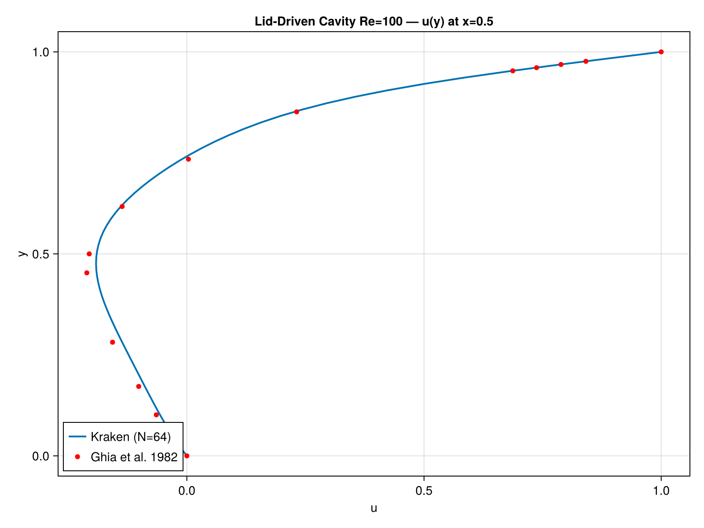
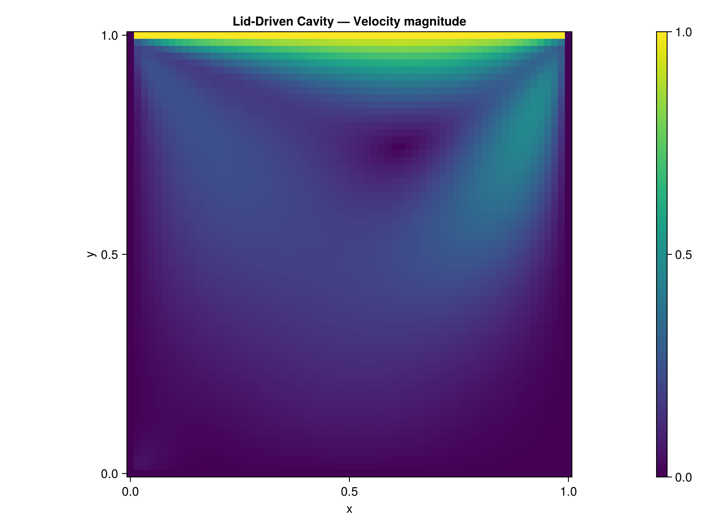
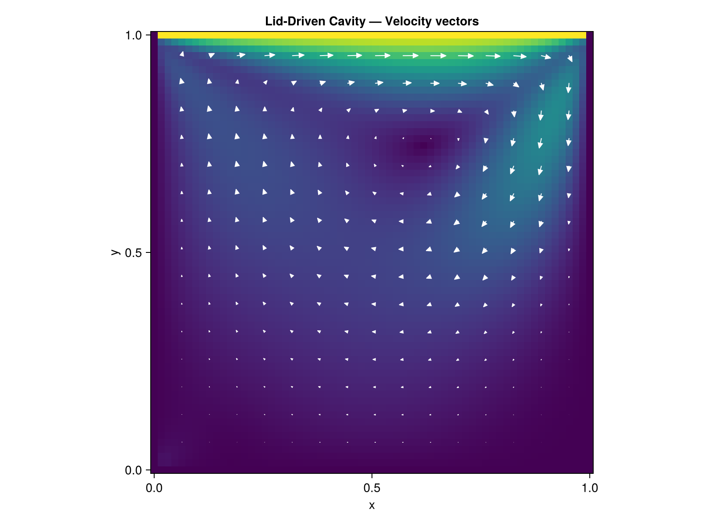

Lid-Driven Cavity
Problem Description
The lid-driven cavity is the most widely used benchmark for incompressible Navier-Stokes solvers. A square cavity $[0,1]^2$ has no-slip walls on three sides and a moving lid at the top ($u=1, v=0$). At $Re = 100$, a primary vortex develops with well-documented velocity profiles.
u = 1, v = 0 (lid)
┌──────────────┐
│ │
u = 0 │ primary │ u = 0
v = 0 │ vortex │ v = 0
│ │
└──────────────┘
u = 0, v = 0 (wall)Equations
\[\frac{\partial \mathbf{u}}{\partial t} + (\mathbf{u} \cdot \nabla)\mathbf{u} = -\nabla p + \frac{1}{Re} \nabla^2 \mathbf{u}\]
\[\nabla \cdot \mathbf{u} = 0\]
Solved with the projection method (projection_step!) at $Re = 100$.
Reference Solution
Ghia, Ghia & Shin (1982) provide tabulated velocity profiles along the cavity centerlines at various Reynolds numbers. The $u(y)$ profile at $x = 0.5$ is the standard validation metric.
Implementation
The solver uses the built-in run_cavity function:
u, v, p, converged = run_cavity(N=64, Re=100.0, cfl=0.2,
max_steps=20000, tol=1e-7)This wraps the full projection method: advect! for convection, laplacian! for diffusion, solve_poisson_fft! for pressure, and gradient! + divergence! for the correction step.
Results
Velocity Profile vs Ghia Data

The computed profile (blue line) matches the 17 reference data points (red dots) from Ghia et al. with an L2 relative error below 2%.
Velocity Magnitude

Velocity Vectors

Performance
| Grid | CPU time (s) | Metal time (s) | Speedup |
|---|---|---|---|
| 64x64 | TBD | TBD | TBD |
Measured on Apple M-series, Julia 1.12
References
- [1] Ghia, U., Ghia, K. N., & Shin, C. T. (1982). High-Re solutions for incompressible flow using the Navier-Stokes equations and a multigrid method. Journal of Computational Physics, 48(3), 387-411.